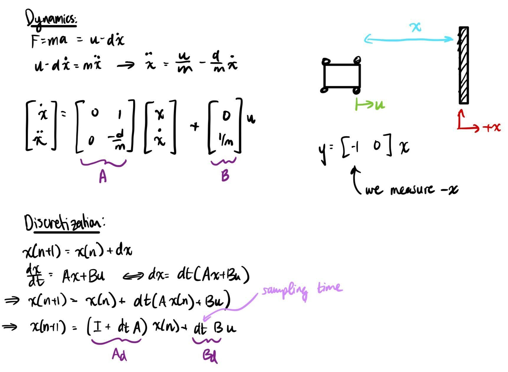
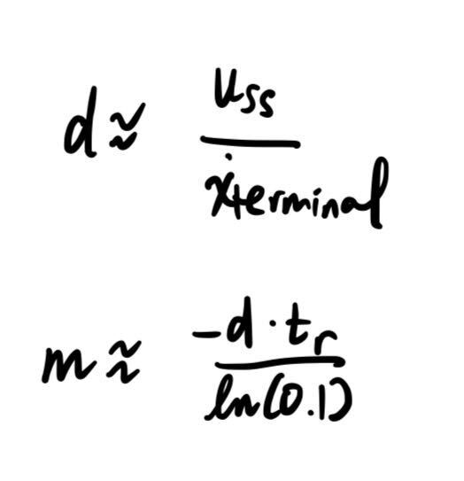
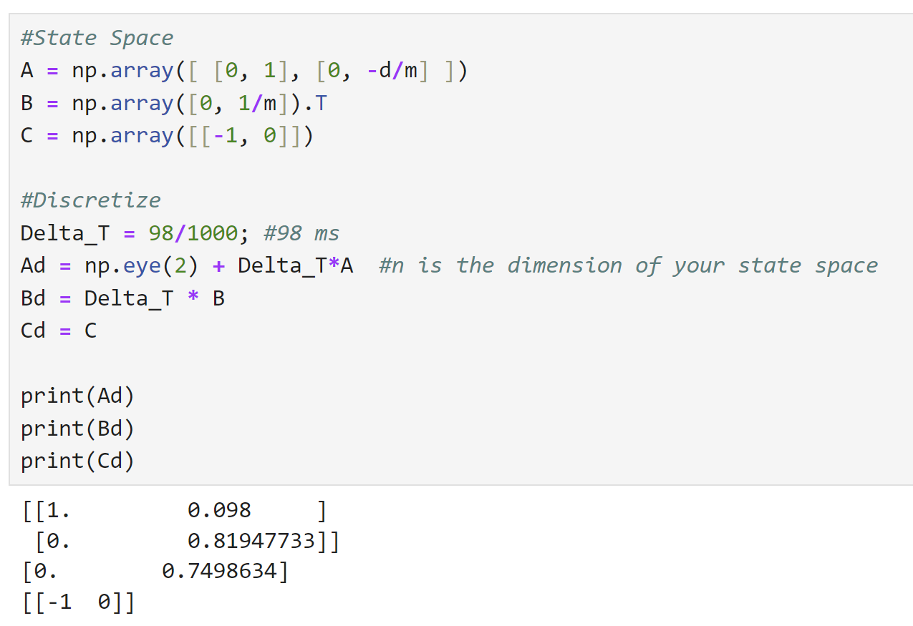
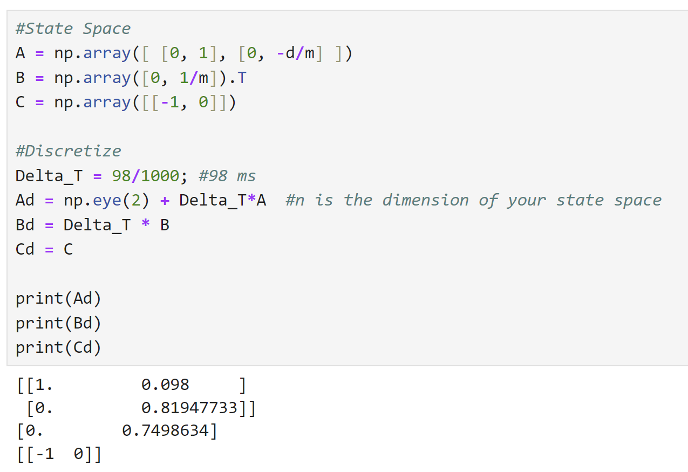

Lab 7 Kalman Filter
The purpose of this lab was to implement model based estimation through the form of a Kalman Filter. The motivation behind this is the fact that our TOF sensors are fairly slow and have uncertainties at either extreme end of their range; the Kalman filter, by using priors and measurements to come up with an estimate of the state of the robot, will help make a more robust control overall.
Setting up State Space: Estimating Drag and Momentum
First, I needed to set up my state space for the robot. My two states were robot position and velocity, and control would be through PWM. Based on the dynamics of the system, I needed to estimate drag and momentum.
To do this, I attemped to reach "terminal velocity"/steady state velocity. I did so by driving the robot at a wall from far away, while taking TOF readings; these TOF readings could then be used to calculate velocity as v=dx/dt. I did not actually run my robot at max speed, though, because it did not make sense to linearize the system about that point. This is because while PID loops often output max PWM at first, because the robot moves so fast at that speed, it quickly needs to slow down. I chose 65% max speed, or about 166 PWM, as the speed to test with and linearize about because it is a common velocity for the robot to travel at. From this, I can estimate drag from control effort (take u_ss to be = 0.65 aka 65%) and steady state velocity; momentum can be calculated from drag and 90% rise time.
From the data below, I was able to acquire values. I did a few trials and got similar values across all of them. My steady state velocity was about 2700 mm/s; and tr was 1.25s. This gave me my drag and momentum estimates. From there, I discretized my A and B matrices as described by the dynamics diagram above; discretization is needed because neither the Kalman filter nor the TOF is truly continuous, as the dynamics assume. I got a steady state speed of about 2700 mm/s at 65% max speed, and a 90 rise time of around 1.25s, resulting in the drag and momentum below. As a sanity check, I checked my values with students' lab writeups from last year and things seemed to be of about the same magnitude and range, so I settled with these values.
 

Python Simulation
*5000 level version
After estimating drag and momentum, it was time to setup my Kalman filter. The Kalman filter is based on estimating state and covariance at each timestep of the system. To speed up my filter, I followed the guidelines for the 5000 level KF, which only runs the update of the step if new information is available (aka a new TOF reading), but runs the prediction step (which operates on propagating the dynamics forward) every single time.
I am taking another class, MAE 6760: Model Based Estimation, which also discusses and implements simulations of Kalman Filters. That class uses the same equations, but with slightly different notations. (Aside, MAE 6780: Multivariable Feedback Control also talks about KFs; but that class yet again uses different notation, sad). For my own understanding, I wrote my code in the Model-Based-Estimation notation, but the mapping is shown below.

The terms which are highlighted in yellow represent terms which I noticed in the Kalman Filter Equation I learned in my other class, but not this course. I ran my filter with and without it, though, and did not actually see any difference. Plots of both versions will be shown below.
The function is shown below. It calculates the Kalman Gain, state estimate, and covariance for a single timestep every time it is called. For parameters, it takes in the previous estimates, as well as the state space, process noise, sensor noise, and a variable UPDATE_ON. UPDATE_ON is true (=1) if and only if there is a new TOF reading available, in which case the update step of the filter will run. If not, it returns the result of the prediction step.
Next, I had to initialize my Kalman Filter with covariances and priors. For my model/process noise, I chose sigma1 = sigma2 = (31.9 mm [or mm/s])^2. This was based on the equation given in class, of sqrt(10^2/[sample rate]^2) and my TOF sampling rate of 98ms. For my sensor noise, I used the 20mm^2 TOF covariance discussed in class. However, if I increased this sigma_3 value, my model became much worse. This is because the Kalman filter chooses to trust the model more or less depending on how large the sensor covariance is, so with larger covariance the sensor noise caused the estimates to be less trustworthy than the prediction based on dynamics only. The dynamics don't account for things like friction, which made my estimates more inaccurate especially at higher speeds.
The results of my Kalman filter in various cases is shown below. I tried it with several different datasets to verify that it did not just work for the one scenario. It did not perform quite is well for very erratic TOF data, but still was quite accurate overall. Below shows results from simply driving towards (and then crashing into) the wall. Note that when I used the modified covariance equation discussed above, I actually saw no difference. I think this is because [fill this in]. I also tried the loop with different priors, but I noticed they don't matter too much because the filter converges pretty fast, anyways. The initial x0 matters a bit more than P0, but even then, as soon as a TOF reading comes in, the filter sort of self-aligns.


Bonus - Implementation on Robot
I have not had time to do this yet, but plan to for/before the stunts lab!
Discussion
I think Kalman filters will help a lot for correcting sensor noise, because I can cross reference predicted dynamics with real-time sensor readings. While I did not have time to implement it on the robot for this writeup, I definitely plan on it for the future because I think it will benefit the overall control and performance of the robot.